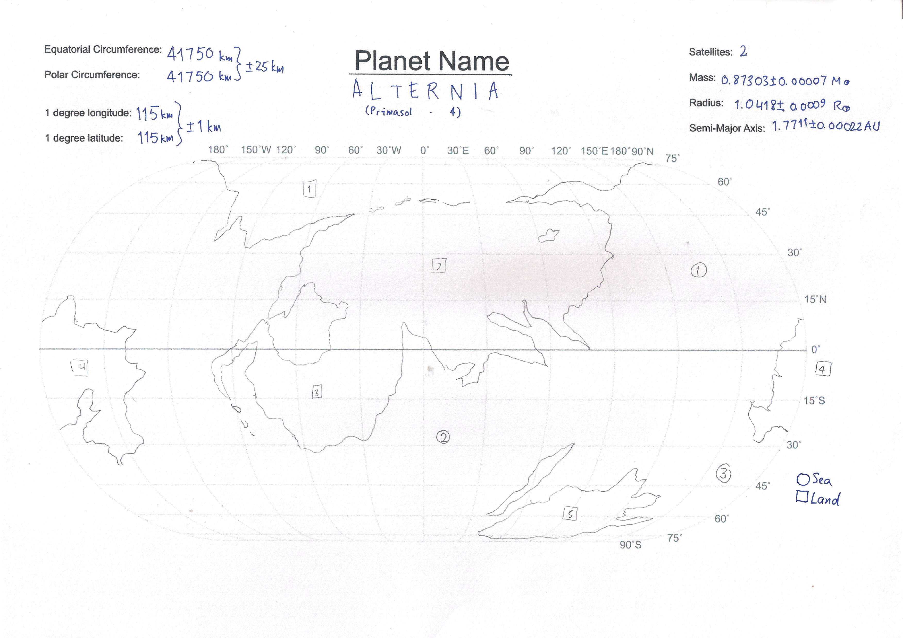

Yes, a metro map. What do you expect? An actual map?
Oh, alright, yes, a real map is in order. Alas, real maps are in short supply at the present moment because the regional maps have to be drawn, and then they have to be stitched together to form the full world map. A metro map is made as a stop-gap measure; however, the metro map also helps in reading order as they give you a guide – a which-way-is-forward, how-much-is-left guide.
But if you're dying for a map, how about this one down here?
Raw, is it not? Fear not. It will be refined, in time.